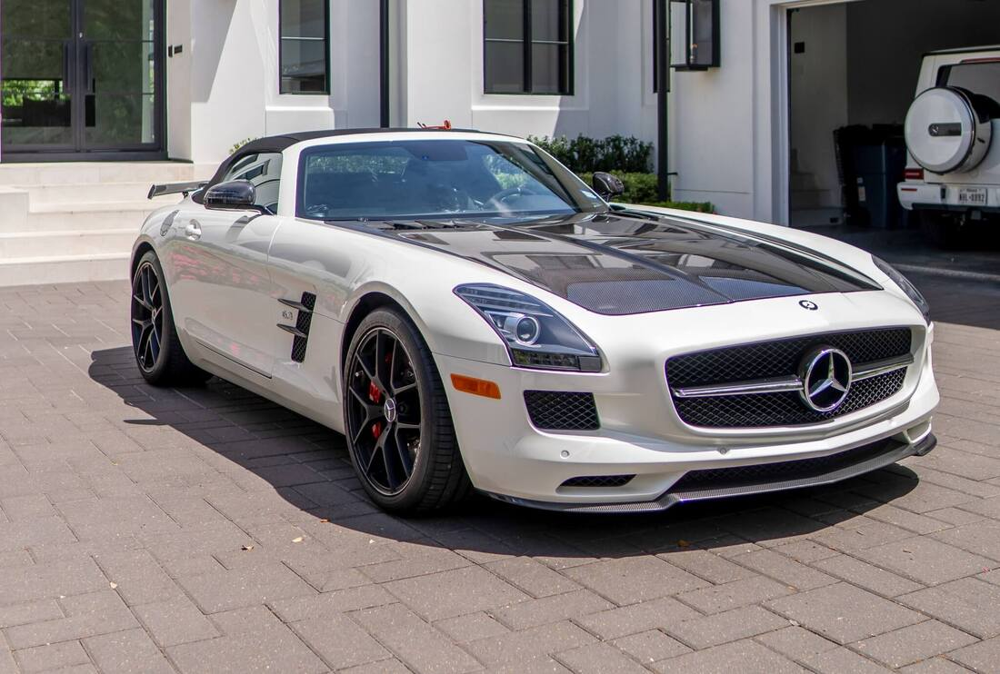

4/5 Mercedes-Benz SLS AMG

Описван като духовен наследник на легендарния суперавтомобил 300SL "Gullwing" от 50-те години на миналия век , AMG SLS беше доказателството, че 2010-те ще бъдат огромно десетилетие за Mercedes-Benz. SLS незабавно се превърна в кола мечта на всеки автомобилен ентусиаст, включващ разпознаваемия дизайн на вратата "крило на чайка" и до 622 коня сурова мощност, идваща от 6.2L V8.
Но това не е всичко, през 2013 г. моделът получи своя лимитиран електрически вариант, който се превърна в най-мощния сериен Mercedes, създаван някога, с комбинирана мощност от 740 конски сили. За съжаление, обществеността не беше подготвена за това чудовище и моделът беше спрян през 2015 г., за да ни даде следната кола в този списък. Все още обаче предстои да бъде обявен истински наследник, достатъчно мощен, за да замени SLS.